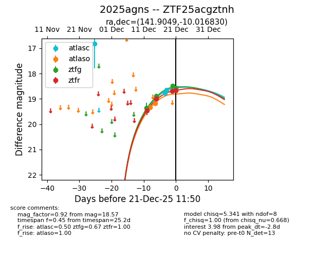
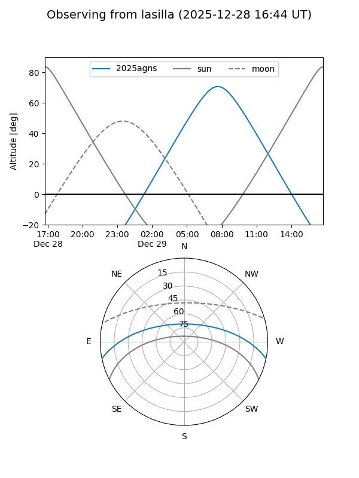
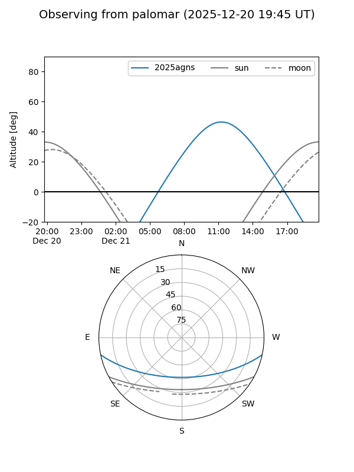
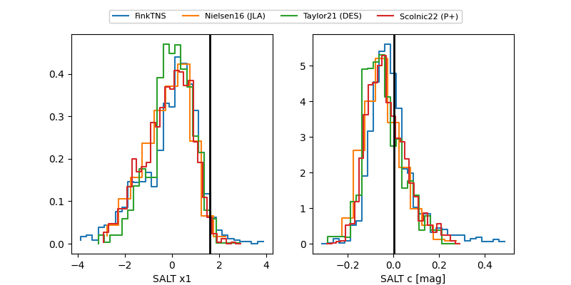

2025agns
Target 2025agns at 2025-12-19 11:17
Aliases and brokers:
FINK: fink-portal.org/ZTF25acgztnh
Lasair: lasair-ztf.lsst.ac.uk/objects/ZTF25acgztnh
ALeRCE: alerce.online/object/ZTF25acgztnh
TNS: wis-tns.org/object/2025agns
YSE: ziggy.ucolick.org/yse/transient_detail/2025agns
alt names
ZTF25acgztnh (ztf,fink_ztf)
2025agns (tns,yse)
Coordinates:
equatorial (ra, dec) = 141.9049,-10.01683
equatorial (HMS+DMS) = 09:27:37.17,-10:01:00.59
galactic (l, b) = (242.7124,+28.21471)
Flags:
Photometry:
last atlasc=18.69, atlaso=19.17, ztfg=18.89, ztfr=18.99
3 atlasc, 2 atlaso, 2 ztfg, 2 ztfr detections
Lightcurve

Visibility


Additional plots
